Gefährdungsbeurteilung als PDF
Die Gefährdungsbeurteilung für deinen Beruf: Vorlage wählen, Risiken bewerten, Maßnahmen mit Termin verfolgen, Dokument als PDF unterschreiben. Ohne Konto.
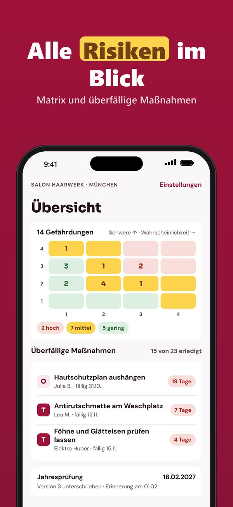
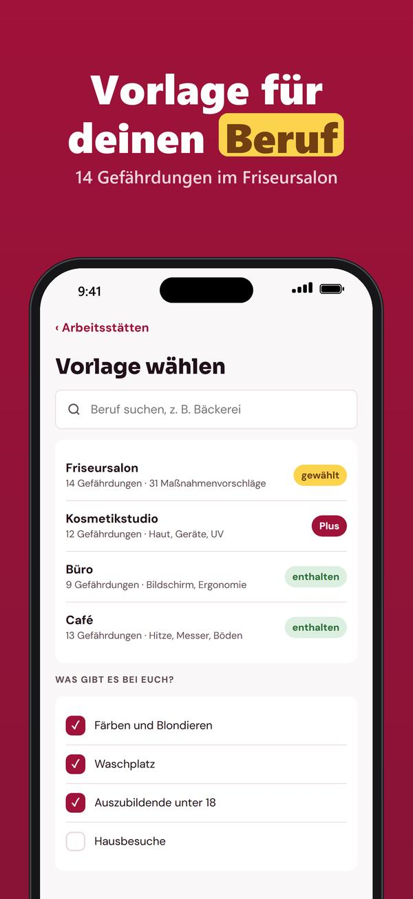
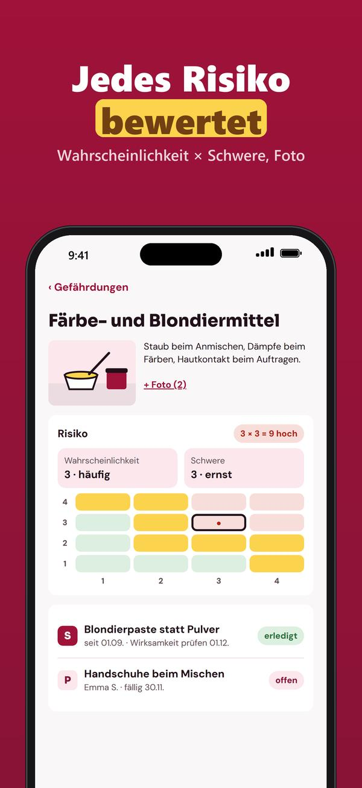
Periklo hilft kleinen Betrieben bei der Gefährdungsbeurteilung. Wähle die Vorlage für deinen Beruf, zum Beispiel Friseursalon, Bäckerei, Tischlerei oder Büro: typische Gefährdungen und passende Maßnahmen sind vorbereitet. Du bewertest jedes Risiko mit Wahrscheinlichkeit und Schwere, legst Maßnahmen nach der STOP-Reihenfolge mit Verantwortlichen und Terminen fest und prüfst später, ob sie gewirkt haben. Das Ergebnis wird ein Dokument mit Version und Unterschrift als PDF.
Ohne Abo: 1 Arbeitsstätte, 3 Vorlagen (Friseursalon, Büro, Café), PDF mit Wasserzeichen. Periklo Plus ist ein Monats- oder Jahresabo (Testzeitraum beim Jahresabo): alle Vorlagen und neue Pakete jedes Jahr, unbegrenzt Arbeitsstätten und Maßnahmen, PDF ohne Wasserzeichen mit Unterschrift, Erinnerungen, Teilen über iCloud, CSV. Verlängert sich automatisch, jederzeit in den Apple-ID-Einstellungen kündbar. Keine Werbung, kein Konto.
Periklo ist ein unabhängiges Hilfsmittel ohne Verbindung zu Behörden, Unfallversicherungen oder Verbänden. Die Vorlagen sind Vorschläge und müssen an den eigenen Betrieb angepasst werden. Für die Gefährdungsbeurteilung und ihre Umsetzung bleibt der Betrieb verantwortlich. Keine Rechtsberatung.
Risques, actions et PDF
Le document unique de votre métier : choisissez un modèle, évaluez les risques, suivez les actions avec échéance et signez le PDF. Sans compte.
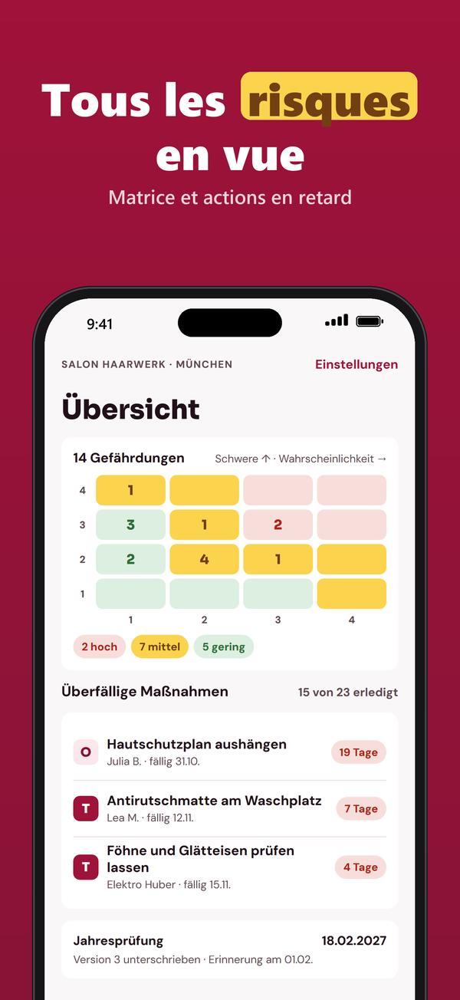
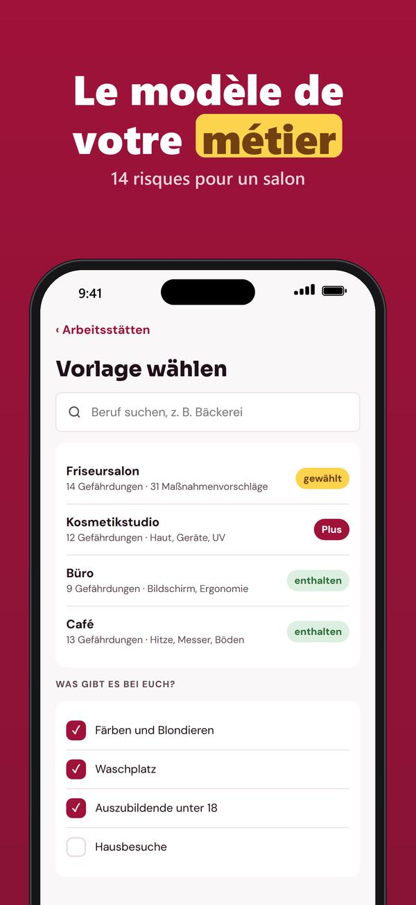
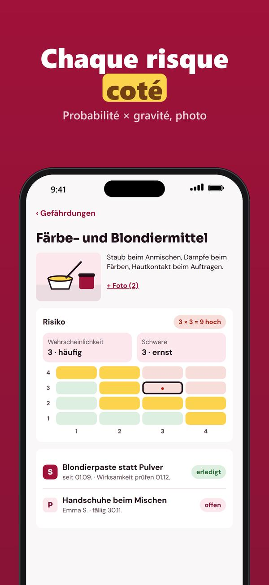
Periklo aide les petites entreprises à évaluer leurs risques professionnels. Choisissez le modèle de votre métier, par exemple salon de coiffure, boulangerie, menuiserie ou bureau : les risques typiques et les mesures adaptées sont prêts. Vous cotez chaque risque par probabilité et gravité, fixez les actions avec responsable et échéance, puis vérifiez leur efficacité. Le résultat devient un document versionné et signé en PDF.
Sans abonnement : 1 lieu de travail, 3 modèles (coiffure, bureau, café), PDF avec filigrane. Periklo Plus est un abonnement mensuel ou annuel (essai sur l’annuel) : tous les modèles et de nouveaux packs chaque année, lieux et actions illimités, PDF sans filigrane avec signature, rappels, partage iCloud, CSV. Renouvellement automatique, résiliable à tout moment dans les réglages de l’identifiant Apple. Sans publicité, sans compte.
Periklo est un outil indépendant, sans lien avec des administrations, des organismes de prévention ou des fédérations. Les modèles sont des propositions à adapter à votre entreprise. L’employeur reste responsable de l’évaluation des risques et de sa mise en œuvre. Pas de conseil juridique.
DVR, misure e scadenze in PDF
La valutazione dei rischi per il tuo mestiere: scegli il modello, valuta i rischi, segui le misure con scadenza e firma il PDF. Senza account.
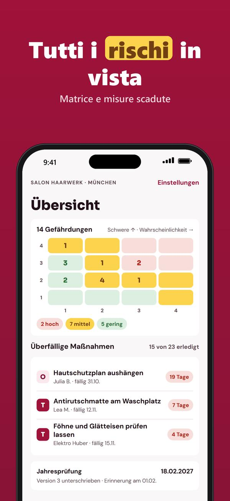
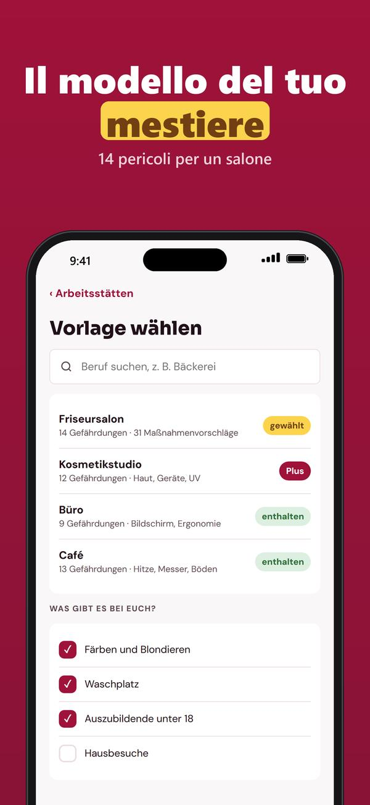
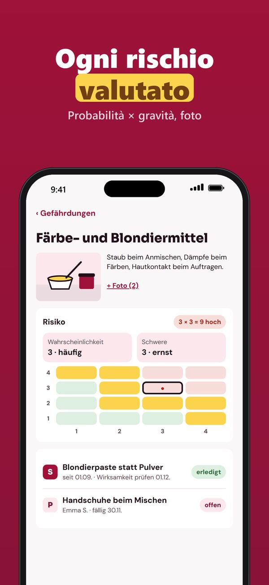
Periklo aiuta le piccole imprese nella valutazione dei rischi. Scegli il modello del tuo mestiere, ad esempio parrucchiere, panificio, falegnameria o ufficio: i pericoli tipici e le misure adatte sono già pronti. Valuti ogni rischio con probabilità e gravità, fissi le misure con responsabile e scadenza e poi controlli se hanno funzionato. Il risultato diventa un documento con versione e firma in PDF.
Senza abbonamento: 1 luogo di lavoro, 3 modelli (parrucchiere, ufficio, bar), PDF con filigrana. Periklo Plus è un abbonamento mensile o annuale (con prova sull’annuale): tutti i modelli e nuovi pacchetti ogni anno, luoghi e misure illimitati, PDF senza filigrana con firma, promemoria, condivisione iCloud, CSV. Rinnovo automatico, disdici quando vuoi nelle impostazioni dell’ID Apple. Nessuna pubblicità, nessun account.
Periklo è uno strumento indipendente, senza legami con enti pubblici, istituti assicurativi o associazioni. I modelli sono proposte da adattare alla propria impresa. La valutazione dei rischi e la sua attuazione restano responsabilità del datore di lavoro. Nessuna consulenza legale.
Ryzyko zawodowe i działania
Ocena ryzyka zawodowego dla Twojej branży: wybierz szablon, oceń ryzyko, pilnuj działań z terminem i podpisz PDF. Bez konta.
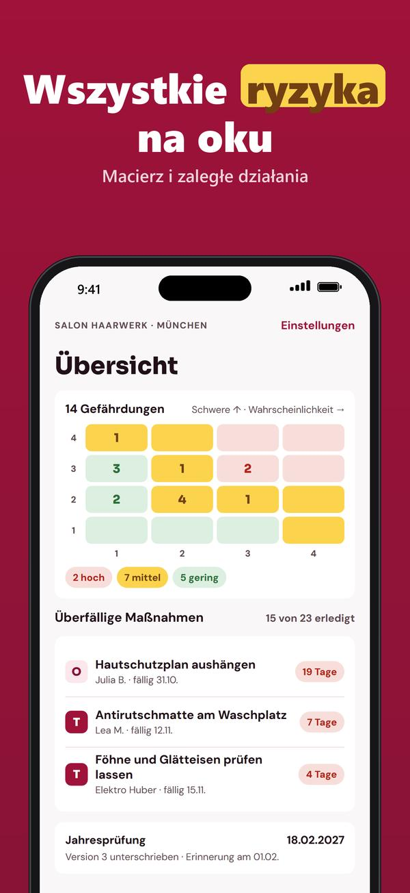
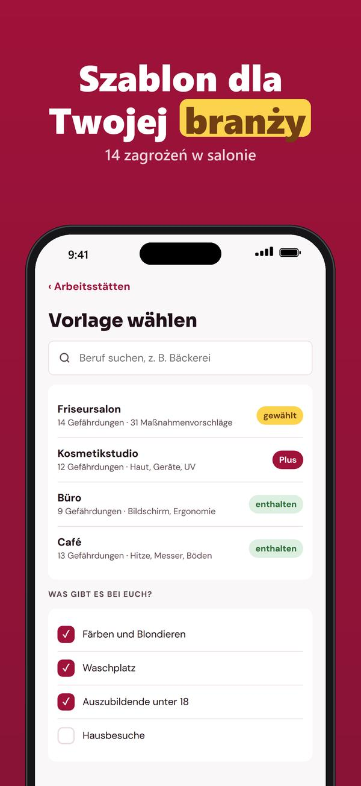
Periklo pomaga małym firmom w ocenie ryzyka zawodowego. Wybierz szablon swojej branży, na przykład salon fryzjerski, piekarnia, stolarnia lub biuro: typowe zagrożenia i pasujące działania są gotowe. Oceniasz każde ryzyko według prawdopodobieństwa i skutków, ustalasz działania z osobą odpowiedzialną i terminem, a potem sprawdzasz, czy zadziałały. Wynikiem jest dokument z wersją i podpisem w PDF.
Bez subskrypcji: 1 miejsce pracy, 3 szablony (fryzjer, biuro, kawiarnia), PDF ze znakiem wodnym. Periklo Plus to subskrypcja miesięczna lub roczna (z okresem próbnym przy rocznej): wszystkie szablony i nowe pakiety co roku, bez limitu miejsc i działań, PDF bez znaku wodnego z podpisem, przypomnienia, udostępnianie przez iCloud, CSV. Odnawia się automatycznie, anulujesz w ustawieniach Apple ID. Bez reklam i konta.
Periklo to niezależne narzędzie, niezwiązane z urzędami, instytucjami ubezpieczeniowymi ani związkami. Szablony są propozycją, którą trzeba dopasować do własnej firmy. Za ocenę ryzyka i jej wdrożenie odpowiada pracodawca. To nie jest porada prawna.
Riesgos laborales y medidas
La evaluación de riesgos de tu oficio: elige la plantilla, valora los riesgos, sigue las medidas con plazo y firma el PDF. Sin cuenta.
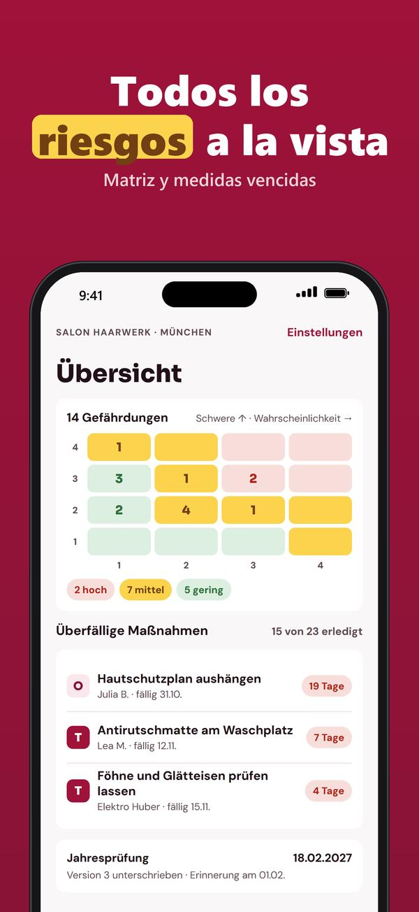
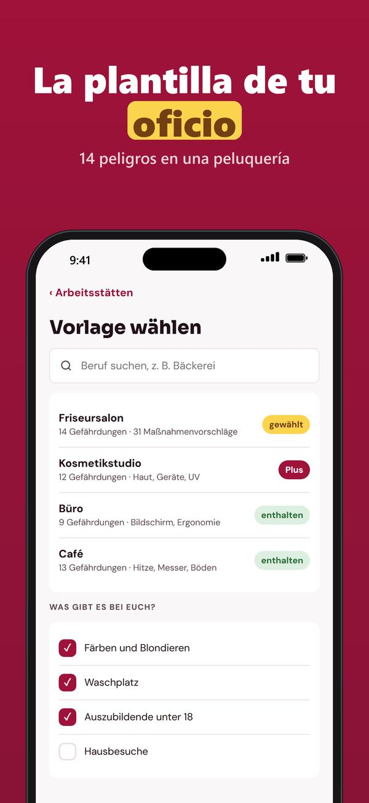
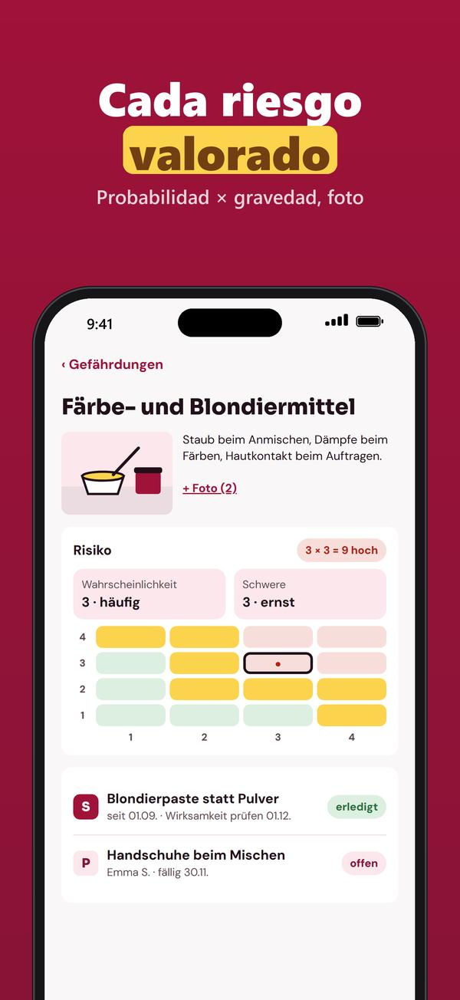
Periklo ayuda a las pequeñas empresas con la evaluación de riesgos laborales. Elige la plantilla de tu oficio, por ejemplo peluquería, panadería, carpintería u oficina: los peligros típicos y las medidas adecuadas ya están preparados. Valoras cada riesgo por probabilidad y gravedad, fijas medidas con responsable y plazo y después compruebas si han funcionado. El resultado es un documento con versión y firma en PDF.
Sin suscripción: 1 centro de trabajo, 3 plantillas (peluquería, oficina, cafetería), PDF con marca de agua. Periklo Plus es una suscripción mensual o anual (con prueba en la anual): todas las plantillas y nuevos paquetes cada año, centros y medidas ilimitados, PDF sin marca de agua con firma, recordatorios, compartir por iCloud, CSV. Se renueva automáticamente; cancela cuando quieras en los ajustes del ID de Apple. Sin anuncios, sin cuenta.
Periklo es una herramienta independiente, sin relación con administraciones, mutuas ni asociaciones. Las plantillas son propuestas que hay que adaptar a cada empresa. La evaluación de riesgos y su aplicación siguen siendo responsabilidad del empresario. No es asesoramiento jurídico.
Risico’s, maatregelen en PDF
De risicobeoordeling voor je vak: kies een sjabloon, beoordeel de risico’s, volg maatregelen met deadline en onderteken de PDF. Zonder account.
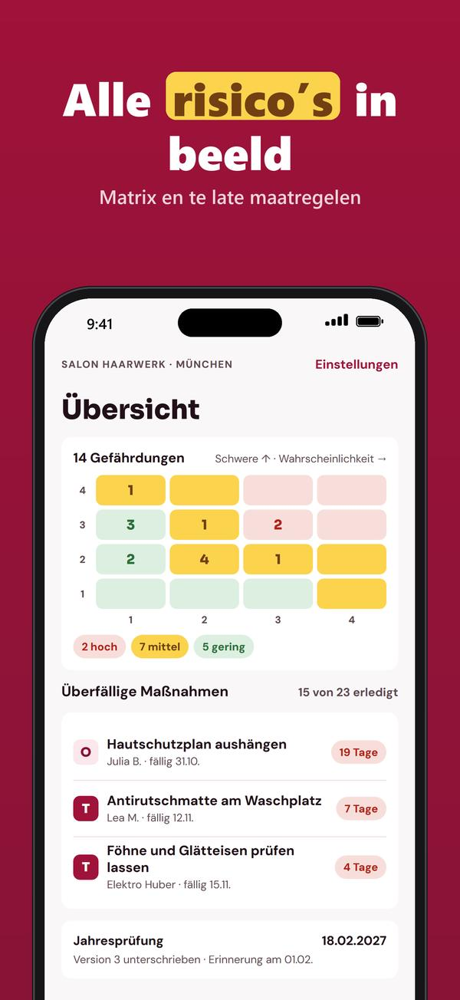
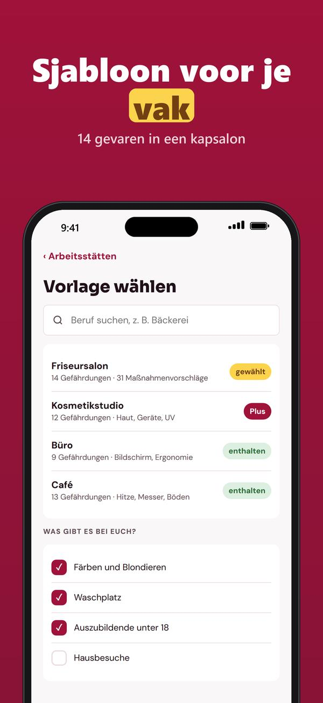
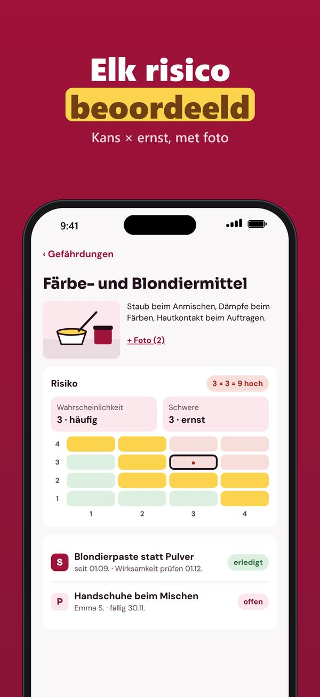
Periklo helpt kleine bedrijven bij de risicobeoordeling. Kies het sjabloon voor je vak, bijvoorbeeld kapsalon, bakkerij, schrijnwerkerij of kantoor: typische gevaren en passende maatregelen staan klaar. Je beoordeelt elk risico op kans en ernst, legt maatregelen vast met verantwoordelijke en deadline en controleert later of ze gewerkt hebben. Het resultaat is een document met versie en handtekening als PDF.
Zonder abonnement: 1 werkplek, 3 sjablonen (kapsalon, kantoor, café), PDF met watermerk. Periklo Plus is een maand- of jaarabonnement (proefperiode bij het jaarabonnement): alle sjablonen en elk jaar nieuwe pakketten, onbeperkt werkplekken en maatregelen, PDF zonder watermerk met handtekening, herinneringen, delen via iCloud, CSV. Verlengt automatisch, altijd op te zeggen in de Apple ID-instellingen. Geen reclame, geen account.
Periklo is een onafhankelijk hulpmiddel, zonder band met overheden, verzekeraars of brancheorganisaties. De sjablonen zijn voorstellen die je aanpast aan je eigen bedrijf. De werkgever blijft verantwoordelijk voor de risicobeoordeling en de uitvoering. Geen juridisch advies.